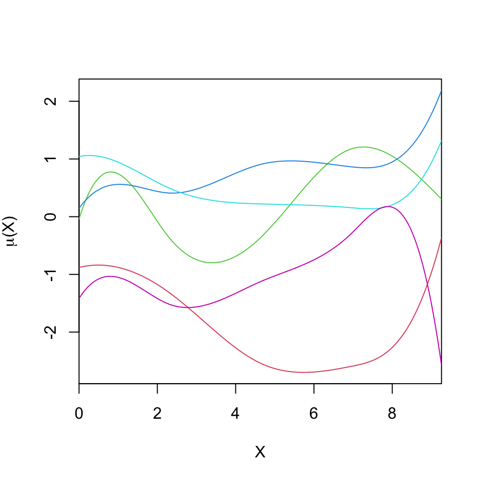
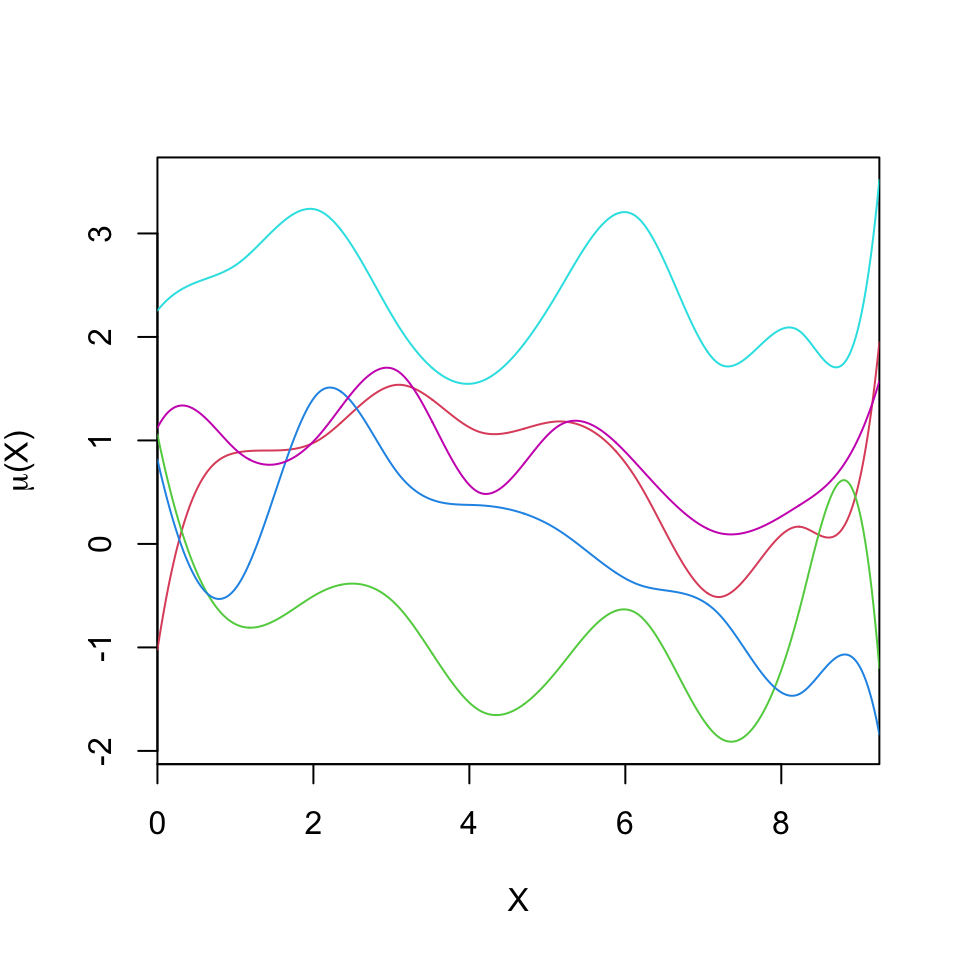
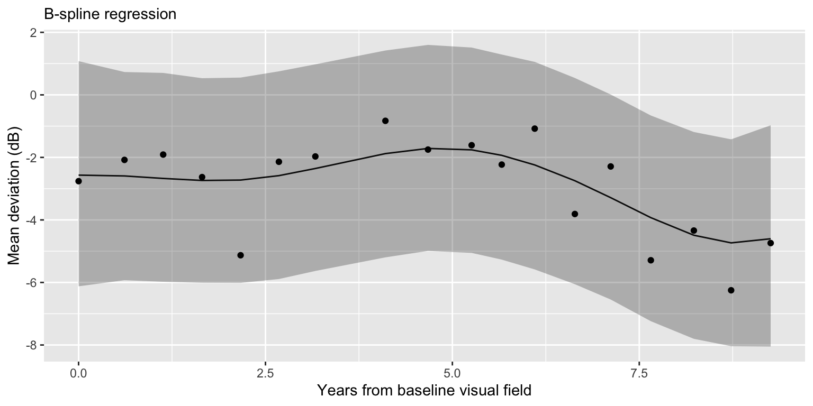
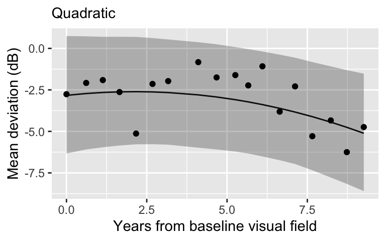
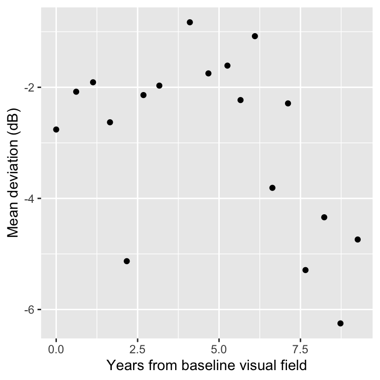
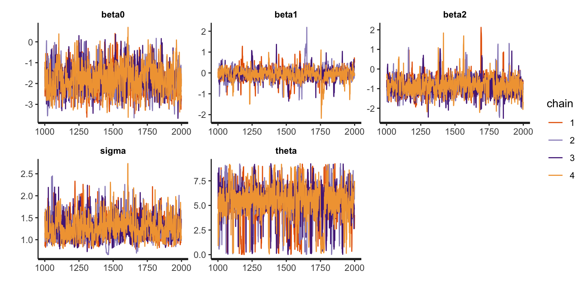
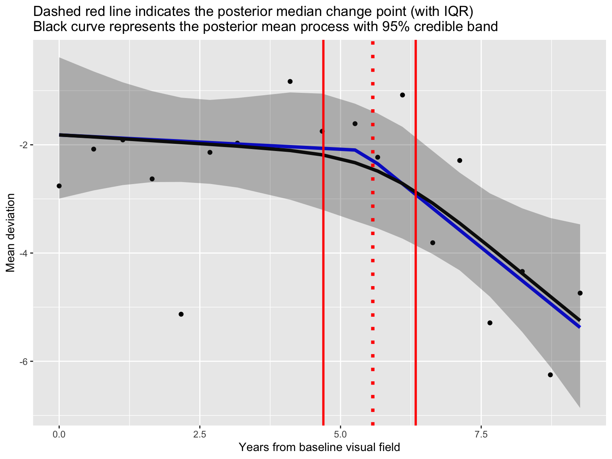

### Load and process data to obtain data for an example patient
dat <- read.csv(file = "LongGlaucVF_20150216/VisualFields.csv")
dat <- dat[order(dat$STUDY_ID, dat$SITE), ]
dat$EYE_ID <- cumsum(!duplicated(dat[, c("STUDY_ID", "SITE")]))
dat_pat <- dat[dat$EYE_ID == "4", ] # 4
dat_pat$time <- (dat_pat$AGE - dat_pat$AGE[1]) / 365
dat_pat <- dat_pat[, c("time", "MD")]
colnames(dat_pat) <- c("X", "Y")
glimpse(dat_pat)Nonlinear Regression
Prof. Sam Berchuck
Feb 06, 2025
Review of last lecture
On Tuesday, we put all of our skills together and learned about the Bayesian workflow.
We have now learned all the skills needed to perform Bayesian inference.
The rest of the course we will introduce new models and data types that are useful for performing biomedical data science.
Learning objectives today
Thus far, we have focused on linear regression models.
Today we will focus on two common approaches that use linear regression to build nonlinear associations: polynomial regression and b-splines.
Both approaches work by transforming a single predictor variable into several synthetic variables.
We will also look at a change point model, that encodes clinical context into a nonlinear framework.
Linear regression
- Consider the classic parametric model:
\[Y_i = \alpha + X_i \beta + \epsilon_i, \quad \epsilon_i \sim N(0, \sigma^2).\]
Assumptions:
\(\epsilon_i\) are independent.
\(\epsilon_i\) are Gaussian.
The mean of \(Y_i\) is linear in \(X_i\).
The residual distribution does not depend on \(X_i\).
Today we will generalize the linearity assumption.
Nonlinear regression
Define: \(\mu_i = \mathbb{E}[Y_i] = \alpha + x_i\beta.\)
The mean process can modeled flexibly, \(\mu_i = g(X_i)\), where \(g\) is some function that relates \(X_i\) to \(\mathbb{E}[Y_i | X_i].\)
A form of nonlinear regression approximates the function \(g\) using a finite basis expansion, \[g(X_i) = \alpha + \sum_{j=1}^J B_j(X_i)\beta_j,\] where \(B_j(X)\) are known basis functions and \(\beta_j\) are unknown parameters that determine the shape of \(g\).
Nonlinear regression
Example: Polynomial regression takes \(B_j(X_i) = X_i^j\).
Example: Gaussian radial basis functions: \[B_j(X_i) = \exp\left\{-\frac{|X_i - \nu_j|^2}{l^2}\right\},\] where \(\nu_j\) are centers of the basis functions and \(l\) is a common width parameter.
The number of of basis functions and the width parameter \(l\) controls the scale at which the model can vary as a function of \(X_i\).
Nonlinear regression
- Example: The cubic B-spline basis function is the following piecewise cubic polynomial:
\[B_j(X_i) = \left\{ \begin{matrix*}[l] \frac{1}{6}u^3 & \text{for }X_i \in (\nu_j,\nu_{j+1}), & u = (X_i - \nu_j) / \delta\\ \frac{1}{6}(1 + 3u + 3u^2 - 3u^3) & \text{for }X_i \in (\nu_{j+1},\nu_{j+2}), & u = (X_i - \nu_{j+1}) / \delta\\ \frac{1}{6}(4 - 6u^2 + 3u^3) & \text{for }X_i \in (\nu_{j+2},\nu_{j+3}), & u = (X_i - \nu_{j+2}) / \delta\\ \frac{1}{6}(1 - 3u + 3u^2 - u^3) & \text{for }X_i \in (\nu_{j+3},\nu_{j+4}), & u = (X_i - \nu_{j+3}) / \delta\\ 0 & \text{otherwise.} \end{matrix*} \right.\]
B-splines are a piecewise continuous function defined conditional on some set of knots.
Here we assume a uniform knot locations \(\nu_{j + k} = \nu_j + \delta k\).
B-splines have compact support, so the design matrix is sparse.
Nonlinear regression
Conditionally on the selected baseis \(B\), the model is linear in the parameters. Hence we can write, \[Y_i = \mu(X_i) + \epsilon_i = \mathbf{w}_i \boldsymbol{\beta} + \epsilon_i,\] with \(\mathbf{w}_i = (B_1(X_i),\ldots,B_J(X_i))\).
Model fitting can proceed as in linear regression models, since the resulting model is linear in \(\boldsymbol{\beta}\).
It is often useful to center the basis function model around the linear model, \(\mu(X_i) = \alpha + X_i \beta + \mathbf{w}_i\boldsymbol{\beta}\).
Glaucoma disease progression
Today we will use data from the Rotterdam Ophthalmic Data Repository.
Glaucoma is the leading cause of irreversible blindness world wide with over 60 million glaucoma patients as of 2012. Since impairment caused by glaucoma is irreversible, early detection of disease progression is crucial for effective treatment.
Patients with glaucoma are routinely followed up and administered visual fields, a functional assessment of their vision.
After each visual field test their current disease status is reported as a mean deviation (MD) value, measured in decibels (dB). A lower mean deviation indicates worse vision.
Central clinical challenges are i) identifying disease progression of MD, and ii) predicting future MD.
Glaucoma data
Rows: 18
Columns: 2
$ X <dbl> 0.0000000, 0.6136986, 1.1315068, 1.6520548, 2.1671233, 2.6794521, 3.…
$ Y <dbl> -2.76, -2.08, -1.91, -2.63, -5.13, -2.14, -1.97, -0.83, -1.75, -1.61…An example patient

Linear regression

Linear regression
Linear regression is simple.
Linear regression is highly interpretable. It encodes disease progression into a slope, which is the amount of MD loss (dB) per year.
- Interpretability is important!
A linear relationship may be an oversimplification.
Often in prediction contexts, a nonlinear approach is preferred.
Polynomials
- Model for the mean process becomes nonlinear:
\[\mathbb{E}[MD_i] = \alpha + \beta_1 Time_i + \cdots + \beta_p Time_i^p\]
\(p\) is chosen depending on the degree of non-linearity.
When fitting non-linear regression in Bayesian context it is useful to standardize the data.
Polynomial regression in Stan
dat_poly <- data.frame(
Y = scale(dat_pat$Y),
X = scale(dat_pat$X)
)
dat_poly$X2 <- dat_poly$X^2
stan_data <- list(
n = nrow(dat_pat),
p = 2,
Y = dat_poly$Y,
X = cbind(dat_poly$X, dat_poly$X2),
)
compile_model <- stan_model(file = "nonlinear_linear.stan")
fit_quadratic <- sampling(compile_model, data = stan_data)Polynomial regression in Stan
// saved in nonlinear_linear.stan
data {
int<lower = 1> n; // number of observations
int<lower = 1> p; // number of covariates
vector[n] Y; // outcome vector
matrix[n, p] X; // covariate vector
}
parameters {
real alpha;
vector[p] beta;
real<lower = 0> sigma;
}
model {
target += normal_lpdf(Y | X * beta, sigma); // likelihood
target += normal_lpdf(alpha | 0, 1); // prior for beta
target += normal_lpdf(beta | 0, 1); // prior for beta
target += inv_gamma_lpdf(sigma | 3, 1); // prior for sigma
}
generated quantities {
vector[n] in_sample;
vector[n] log_lik;
vector[n] mu;
for (i in 1:n) {
mu[i] = alpha + X[i, ] * beta;
in_sample[i] = normal_rng(mu[i], sigma);
log_lik[i] = normal_lpdf(Y[i] | mu[i], sigma);
}
}Quadratic regression

Extract posterior mean for \(\mu\)

Cubic regression

B-spline regression with 5 knots


B-spline regression with 10 knots


B-spline regression
library(splines)
num_knots <- 5
knot_list <- quantile(dat_pat$X, probs = seq(from = 0, to = 1, length.out = num_knots))
B <- bs(dat_pat$X,
knots = knot_list[-c(1, num_knots)],
degree = 3,
intercept = TRUE)
B 1 2 3 4 5
[1,] 1.0000000000 0.0000000000 0.0000000000 0.000000000 0.0000000000
[2,] 0.3932160225 0.5205689817 0.0833170637 0.002897932 0.0000000000
[3,] 0.1303337386 0.6136422453 0.2378607351 0.018163281 0.0000000000
[4,] 0.0220025742 0.5116331668 0.4098320335 0.056532225 0.0000000000
[5,] 0.0001737807 0.3325401051 0.5396793792 0.127606735 0.0000000000
[6,] 0.0000000000 0.1814804087 0.5792969517 0.238573820 0.0006488199
[7,] 0.0000000000 0.0883598392 0.5363295039 0.367729756 0.0075809005
[8,] 0.0000000000 0.0097143260 0.3289042281 0.593688910 0.0676925363
[9,] 0.0000000000 0.0003772242 0.1863761908 0.659307134 0.1539394508
[10,] 0.0000000000 0.0000000000 0.0788259578 0.624941237 0.2955691681
[11,] 0.0000000000 0.0000000000 0.0357900241 0.542804472 0.4124556582
[12,] 0.0000000000 0.0000000000 0.0107764123 0.421496598 0.5286019082
[13,] 0.0000000000 0.0000000000 0.0006952375 0.263269190 0.6110273290
[14,] 0.0000000000 0.0000000000 0.0000000000 0.145095180 0.5888020313
[15,] 0.0000000000 0.0000000000 0.0000000000 0.060977201 0.4468755310
[16,] 0.0000000000 0.0000000000 0.0000000000 0.016061781 0.2349278937
[17,] 0.0000000000 0.0000000000 0.0000000000 0.002189635 0.0740048857
[18,] 0.0000000000 0.0000000000 0.0000000000 0.000000000 0.0000000000
6 7
[1,] 0.0000000000 0.0000000000
[2,] 0.0000000000 0.0000000000
[3,] 0.0000000000 0.0000000000
[4,] 0.0000000000 0.0000000000
[5,] 0.0000000000 0.0000000000
[6,] 0.0000000000 0.0000000000
[7,] 0.0000000000 0.0000000000
[8,] 0.0000000000 0.0000000000
[9,] 0.0000000000 0.0000000000
[10,] 0.0006636368 0.0000000000
[11,] 0.0089498455 0.0000000000
[12,] 0.0391250811 0.0000000000
[13,] 0.1250082431 0.0000000000
[14,] 0.2659535203 0.0001492682
[15,] 0.4675827148 0.0245645535
[16,] 0.5868492773 0.1621610484
[17,] 0.4743685242 0.4494369547
[18,] 0.0000000000 1.0000000000
attr(,"degree")
[1] 3
attr(,"knots")
25% 50% 75%
2.295205 4.965753 6.997945
attr(,"Boundary.knots")
[1] 0.000000 9.257534
attr(,"intercept")
[1] TRUE
attr(,"class")
[1] "bs" "basis" "matrix"B-spline regression

Model comparison




What is the point?
Choice of model is highly dependent on the context.
As we learned in the model comparison lecture, a better fit to the sample might not actually be a better model.
These basis models are difficult to interpret and are not particularly useful for a clinical setting (they may be useful for prediction!).
Change point motivation

Progression is defined by slow (or stable) deterioration, followed by a rapid decrease.
Flexible modeling of MD across time.
Biological representation of progression through the change point.
Change points are a framework for inherently parameterizing progression.
Writing down a model
- Model for the observed data:
\[Y_i = \mu(X_i) + \epsilon_i, \quad \epsilon_i \sim N(0,\sigma^2).\]
- Model for the mean process:
\[\mu(X_i) =\left\{ \begin{array}{ll} {\beta}_0 + \beta_1 X_i & \text{ } \mbox{$X_i \leq \theta$},\\ {\beta}_0 + \beta_1 \theta + {\beta}_2\{X_i - \theta\}& \text{ } \mbox{$X_i > \theta.$}\end{array} \right.\]
- \(\theta \in (\min X_i, \max X_i)\) represents a change point.
Change point model in Stan
// saved in change_points.stan
functions {
vector compute_mean(vector X, real beta0, real beta1, real beta2, real theta) {
int n = size(X);
vector[n] mu;
for (t in 1:n) {
if (X[t] <= theta) mu[t] = beta0 + beta1 * X[t];
if (X[t] > theta) mu[t] = beta0 + beta1 * theta + beta2 * (X[t] - theta);
}
return mu;
}
}
data {
int<lower=1> n;
vector[n] Y;
vector[n] X;
int n_pred;
vector[n_pred] X_pred;
}
transformed data {
real min_X = min(X);
real max_X = max(X);
}
parameters {
real beta0;
real beta1;
real beta2;
real<lower = 0> sigma;
real<lower = min_X, upper = max_X> theta;
}
model {
vector[n] mu = compute_mean(X, beta0, beta1, beta2, theta);
target += normal_lpdf(Y | mu, sigma);
target += normal_lpdf(sigma | 0, 1);
target += normal_lpdf(beta0 | 0, 1);
target += normal_lpdf(beta1 | 0, 1);
target += normal_lpdf(beta2 | 0, 1);
}
generated quantities {
vector[n_pred] mu_pred = compute_mean(X_pred, beta0, beta1, beta2, theta);
array[n_pred] real Y_pred_out = normal_rng(mu_pred, sigma);
vector[n] mu = compute_mean(X, beta0, beta1, beta2, theta);
array[n] real Y_pred_in = normal_rng(mu, sigma);
}Change point regression
stan_model <- stan_model(file = "change_points.stan")
n_pred <- 1000
stan_data <- list(Y = dat_pat$Y,
X = dat_pat$X,
n = nrow(dat_pat),
n_pred = n_pred,
X_pred = seq(0, max(dat_pat$X) + 2, length.out = n_pred))
fit_cp <- sampling(stan_model, data = stan_data)
print(fit_cp, probs = c(0.025, 0.5, 0.0975))Inference for Stan model: anon_model.
4 chains, each with iter=2000; warmup=1000; thin=1;
post-warmup draws per chain=1000, total post-warmup draws=4000.
mean se_mean sd 25% 50% 75% n_eff Rhat
beta0 -1.82 0.02 0.66 -2.29 -1.85 -1.40 749 1.00
beta1 -0.05 0.01 0.29 -0.19 -0.04 0.10 560 1.01
beta2 -0.84 0.02 0.45 -1.12 -0.87 -0.58 889 1.00
sigma 1.27 0.01 0.26 1.08 1.23 1.41 792 1.00
theta 5.36 0.07 1.79 4.69 5.57 6.34 749 1.00
Samples were drawn using NUTS(diag_e) at Wed Jan 1 17:29:30 2025.
For each parameter, n_eff is a crude measure of effective sample size,
and Rhat is the potential scale reduction factor on split chains (at
convergence, Rhat=1).Diagnostics

Posterior fit

Posterior fit

Prediction

Prepare for next class
Work on HW 02.
Complete reading to prepare for next Tuesday’s lecture
Tuesday’s lecture: Robust regression